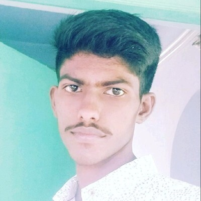

Objective
"I am passionate about leveraging the power of machine learning, data mining, and deep learning methodologies to drive innovation in image processing, auto image enhancement, and the development of robust models. Through hands-on experience in research-oriented projects, I have gained comprehensive knowledge and expertise in predictive modeling, image computation, and data-driven insights. My primary focus is on developing advanced algorithms and models that not only uncover impactful insights but also deliver practical solutions in the dynamic field of data-driven research and innovation."